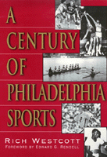

<body bgcolor="#FFFFFF" text="#000000" link="#0000FF" vlink="#CC0000" alink="#CC0000"><center><hr width="350" size="1" align="center" noshade>An engaging history of sports in the Philadelphia area during the twentieth century<hr width="350" size="1" align="center" noshade><p><a href="https://cdcshoppingcart.uchicago.edu/Cart/ChicagoBook.aspx?ISBN=9781566398619&&PRESS=temple" target="_top">Buy this book!</a> | <a href="https://cdcshoppingcart.uchicago.edu/Cart/Cart.aspx?PRESS=temple" target="_top">View Cart</a> | <a href="https://cdcshoppingcart.uchicago.edu/Cart/Cart.aspx?PRESS=temple" target="_top">Check Out</a></p><p></p></center><!--none//--><h1>A Century of Philadelphia Sports</h1>
<H2><!-- Foreword by Edward G. Rendell --></H2>
<h3>Rich Westcott, foreword by Edward G. Rendell</h3>
<P>cloth 1-56639-861-4 $40.50, Apr 01, <FONT COLOR=#990033>Available</FONT>
<BR> 400 pp
7x10
151&nbsp;halftones
</P><BLOCKQUOTE><I><!-- start with bullets --></I></BLOCKQUOTE>
<p><ul><li><p>What was Philadelphia's first National Hockey League team? A hint: No, it wasn't the Flyers.
<li><p>What Philadelphia-area tennis star survived the sinking of the Titanic? A hint: He was ranked number one in 1916.
<li><p>Which baseball sluggers, one from the Phillies and one from the Athletics, won triple crowns in their respective leagues in the same year? A hint: The year was 1933.</ul>
<p>If you got even one of these questions right, you're a winner, or you've already read <I>A Century of Philadelphia Sports</I>. Philadelphia-area athletes have taken home thirty big league home run crowns and twelve NBA scoring titles. The area is home to five Indianapolis 500 winners, five Sullivan Award winners, four Heisman Trophy recipients, and a two-time U.S. Open champion. Not to mention Rube Waddell, the A's Hall of Fame pitcher who would sometimes leave the ballpark in the middle of a game to chase fire trucks. And they're all here in this groundbreaking book.
<p>Unprecedented in its breadth and sweep, <I>A Century of Philadelphia Sports</I> covers the big-time teams and events and also amateur and college sports. Here you will relive the glory days of Penn football and Bobby Jones's completion of the Grand Slam at Merion, the Eagles' defeat of the Packers in the NFL championship game and the Phillies' World Series championship in 1980, the popularity of soccer in the early part of the century and of fast-pitch softball in the latter half. You will visit Baker Bowl, Pine Valley, and Garden State Park and cheer on your favorites in the Penn Relays, the Big 5, and the Army-Navy game. You will also recall such low points as Connie Mack's penchant for selling off winning teams, the college basketball point-shaving scandal of 1961, the Palestra bomb scare.
<p>Did you answer two or even all three of the questions correctly? You will still have fun rediscovering your favorite teams and events and arguing over Rich Westcott's choice of each decade's top athlete. The nineties produced such outstanding athletes as the Flyers' Eric Lindros, the 76ers' Allen Iverson, the Phillies' Curt Schilling, jockey Tony Black, and basketball star Dawn Staley. You will meet all of them in these pages, as well as Westcott's top pick for the decade&#151golfer Jay Sigel. Maybe you will even learn something new.
<p>Oh, yes, the answers are: the Philadelphia Quakers, in 1930; Dick Williams; Chuck Klein (the Phillies) and Jimmie Foxx (the A's).
<BR>&nbsp;<h2>Excerpt</h2><P>Excerpt available at <a href="http://www.temple.edu/tempress">www.temple.edu/tempress</a></p>
<BR>&nbsp;<h2>Reviews</h2>
<p><I>"Great Reading! The history from 1940 on I remember quite vividly. Rich Westcott has captured what athletics has meant to the Philadelphia area. Fond memories for me of the part I played."</I>
<br>&#151<b>Robin Roberts</b>
<p><I>"As a native and sports oriented Philadelphian, I enjoyed </I>A Century of Philadelphia Sports<I> tremendously. Having read other books by Rich Westcott, it's obvious he is a writer who knows the Philadelphia sport scene going back </I>many<I> years. This book stirred a lot of pleasant memories both from my spectator and playing days."</I>
<br>&#151<b>Paul Arizin</b>
<p><I>What a thrill to be chosen by Rich Westcott as the 'Athlete of the 90s' in Philadelphia's rich sports history."</I>
<br>&#151<b>Jay Sigel</b>
<p><I>"</I>A Century of Philadelphia Sports<I> by Rich Westcott certainly covers the rich tradition of all Philadelphia sports teams. It is very interesting reading for young sports fans and those of us who lived through most of it. It will be tough to put this book down once you start reading it."</I>
<br>&#151<b>Tom Gola</b>
<p><I>"Rich Westcott in </I>A Century of Philadelphia Sports<I> has captured the essence of Philadelphia's superb athletes and its sometimes not so great teams. This decade by decade presentation provides an insight into the heroes of our town and why Philadelphia fans expect greatness, but remain loyal to winners and losers alike."</I>
<br>&#151<b>Cathy Rush</b>
<p><I>"If you like the Mummers, cheese Steaks, Soft Pretzels, and Cherry Soda, you'll enjoy rich Westcott's latest book. If you enjoyed Chuck Bednarik, Tom Gola, Richie Ashburn, Del Ennis, Wilt, and Dr. J, you'll love </I>A Century of Philadelphia Sports<I> as [it] captures the real flavor of the Philly sports scene."</I>
<br>&#151<b>"Uncle" Marty Stern</b>
<p><I>"If you have read and enjoyed </I>The New Phillies Encyclopedia<I>, or </I>Phillies '93: An Incredible Season<I>, or </I>Philadelphia's Old Ballparks<I>, you'll have a ball with </I>A Century of Philadelphia Sports<I>. Rich Westcott wrote all of these&#151which means they are accurate, well-researched and fun to read."</I>
<br>&#151<b>Bill Campbell</b>
<p><I>"...a tightly written volume in which Westcott brings context to moments that have become part of the sports lore of the last century. It should be a handy reference for years to come. ... What Westcott has is a feel for many games and how they reflect on [Philadelphia]."</I>
<br>&#151<b>Terry Bitman</b>, <I>Philadelphia Inquirer</I>
<BR>&nbsp;<h2>Contents</h2><P>
<p>Foreword &#150 Edward G. Rendell
<br>Introduction
<br>Acknowledgments
<br>1. 1900s&#151Sports Play a Major Role in City Life
<br>2. 1910s&#151Baseball Dominates the City
<br>3. 1920s&#151Big Names Leave Their Marks
<br>4. 1930s&#151Somber Era Had a Bright Side
<br>5. 1940s&#151Pro Football, Pro Basketball Go Big Time
<br>6. 1950s&#151The First Big All-Sports Decade
<br>7. 1960s&#151An Era of Extremes
<br>8. 1970s&#151A Galaxy of Superstars
<br>9. 1930s&#151What a Way to Start
<br>10. 1990s&#151Individual Performances Save the Decade
<br>Photograph Credits
<br>Index
</P><BR>&nbsp;<H2>About the Author(s)</H2>
<table><tr><td valign="top"><img src="/tempress/authors/1533_au1.gif" height="90" width="75"></td><td width="100%" valign="middle"><p><b>Rich Westcott</b> is a writer and sports historian and a veteran of more than 40 years as a working journalist. He is a leading authority on the Phillies, and for 14 years was editor and publisher of Phillies Report. A native Philadelphian, he is the author of 18 other books, including <I><a href="1818_reg.html" target="_top">Veterans Stadium</a></i>, <I><a href="1273_reg.html" target="_top">Philadelphia's Old Ballparks</a></i>, <i><a href="987_reg.html" target="_top">The Phillies Encyclopedia</a></i> (with Frank Bilovsky), and <I><a href="1533_reg.html" target="_top">A Century of Philadelphia Sports</a></i>. Westcott has seen or covered all the major teams in Philadelphia, including the Warriors and 76ers.</P></td></tr></table>
<BR><H2>Subject Categories</H2>
<p><A HREF="/tempress/philly.html" TARGET="_top">Philadelphia Region</a>
<BR><A HREF="/tempress/sports.html" TARGET="_top">Sports</a>
</p>
<p align="center"><a href="https://cdcshoppingcart.uchicago.edu/Cart/ChicagoBook.aspx?ISBN=9781566398619&&PRESS=temple" target="_top">Buy this book!</a> | <a href="https://cdcshoppingcart.uchicago.edu/Cart/Cart.aspx?PRESS=temple" target="_top">View Cart</a> | <a href="https://cdcshoppingcart.uchicago.edu/Cart/Cart.aspx?PRESS=temple" target="_top">Check Out</a></p><p><font face="Arial" size="1"><a href="copyright.html" onMouseOver="window.status='Web Copyright Policy';return true;" onMouseOut="window.status=''" title="Web Copyright Policy">&copy;</a> 2015 <a href="http://www.temple.edu" target="new" onMouseOver="window.status='Link to Temple University home page';return true;" onMouseOut="window.status=''" title="Link to Temple University home page">Temple University</a>. All Rights Reserved. http://www.temple.edu/tempress/titles/1533_reg.html</font></p>